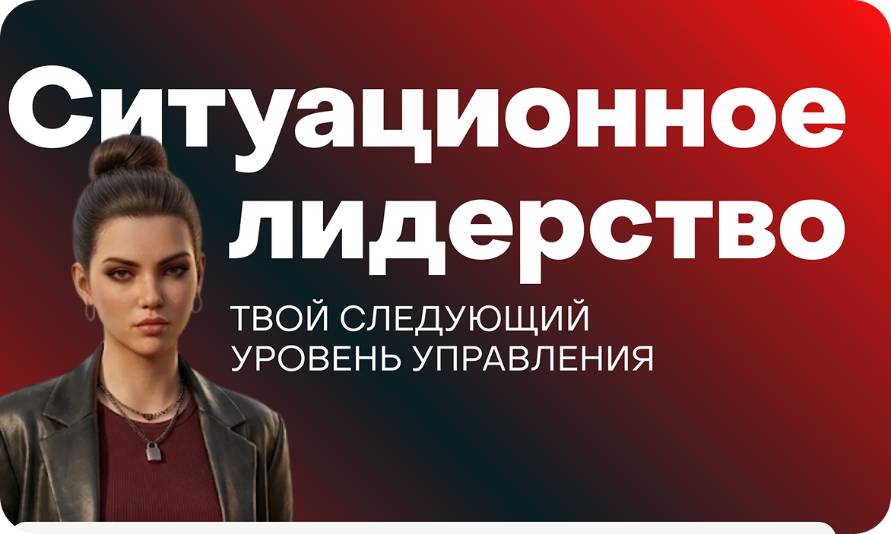

Я занимаюсь дизайном и разработкой интерактивных курсов, лонгридов и сложных образовательных систем. Сочетаю глубокую методологию обучения с чистым UI/UX дизайном и автоматизацией на базе корпоративных LMS.
Проектирование интерфейсов курсов в Figma, создание дизайн-систем, верстка презентаций и чек-листов.
Экспертная разработка интерактивных симуляторов в Articulate Storyline. Сборка мобильных и диалоговых тренажеров в iSpring Suite и Tilda.
Проектирование CJM обучения, написание сценариев (Scenario-Based Learning), разработка систем оценки и карьерных треков.
Комплексная модульная программа для молодых руководителей со сквозным сюжетом.
Разработать программу управленческих навыков. Трудность темы лидерства в том, что в жизни людей сложно поделить на жесткие стереотипы, а готовых универсальных алгоритмов не существует.
Создана система из лонгридов (теория) и симуляторов (практика). Мы прописали психологически достоверных сквозных персонажей. От модуля к модулю они раскрывались все глубже, поэтому пользователь учился взаимодействовать с ними на основе опыта прошлых серий, как в реальной жизни.
Проектирование программы, написание сценариев, подготовка материалов и финальная техническая сборка интерактивных тренажеров в Articulate.
Эмоциональный геймифицированный курс по волонтерству на основе разветвленного сторителлинга.
Главный герой видит объявление о том, что песик ищет дом, и отправляется за ним. По пути он встречает персонажей, нуждающихся в помощи: бабушку с тяжелыми сумками, детей из детского дома на ярмарке. Помогая им, герой (и учащийся) органично узнает о волонтерских фондах и механиках поддержки.
Сложная разветвленная логика переходов в зависимости от выборов пользователя. Я полностью отвечала за сценарий, логику интерактивов, техническую сборку в Articulate и постановку детального ТЗ для дизайнера графики.

Информационный адаптивный курс, спроектированный и полностью сверстанный в Tilda.
Перевести комплексный теоретический блок по ситуационному руководству в удобный цифровой формат. Сделан упор на чистую журнальную верстку, ритмику текста и удобство чтения как с десктопа, так и с мобильных устройств.
Разбивка контента по принципу микрообучения (Microlearning). Вместо монотонного лонгрида спроектирована система интерактивных переключателей, раскрывающихся списков и встроенных быстрых тестов для самопроверки.
Интерактивный симулятор процессов сборки заказов в дарксторах, созданный под смартфоны.
Обучение линейного персонала дарксторов непосредственно на рабочих местах. Главная фишка — симулятор iSpring полностью спроектирован и адаптирован под вертикальные экраны мобильных экранов. Интерфейс воссоздает реальный темп и логику работы сборщика на складе.
Интеграция симулятора в систему онбординга позволила сократить количество ошибок новичков при сборке первых заказов на 18% и ускорить выход сотрудников на плановые показатели скорости.
Проектирование комплексных карьерных треков и перевод ручного хаоса отбора наставников в автоматическую воронку в LMS WebSoft.
Изначально процессы отбора наставников и кадрового резерва велись супервайзерами вручную: списки терялись, сотрудники нарушали дедлайны анкет, аналитика отсутствовала.
По моей личной инициативе была спроектирована сквозная автоматическая воронка на базе WebSoft LMS. Путь сотрудника стал бесшовным: Входной опрос на готовность → Автоматическое назначение теста хард-скиллов → Назначение программы обучения → Финальный тест → Автоматическое зачисление в реестр наставников на корп. портале.
В рамках проекта также оцифрованы 4 ключевые роли: прописана профессиональная дельта (разрыв компетенций) между ними, созданы валидные тестов оценки проф. навыков и сфокусированные программы развития под конкретные дефициты.